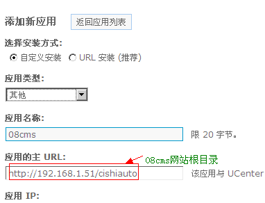
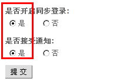
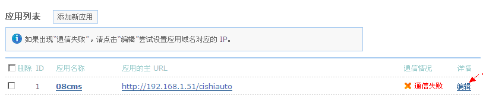
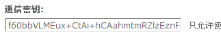
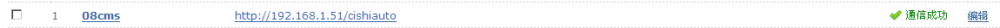
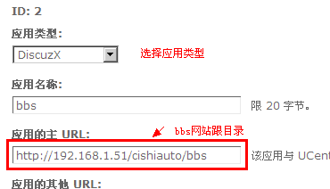
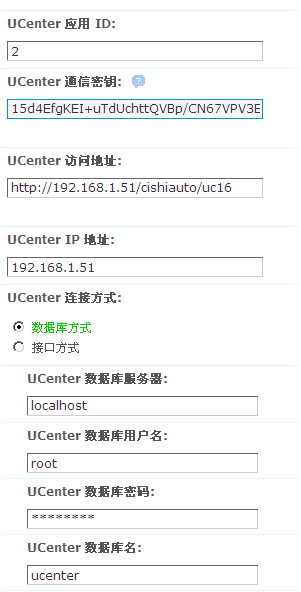
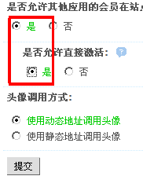

-
08cms与Discuz会员整合有以下步骤：
第一步、08cms与UCenter整合
1.1.在Discuz中UCenter管理后台：应用管理->添加新应用


其它设置默认->提交
返回UCenter应用管理首页

然后，点击编辑

此时系统会自动分配一个通信密钥
1.2.打开08cms后台〖系统设置〗->〖网站参数〗->〖通行证〗

提交后OK
在UCenter应用管理列表中，显示通信成功

第二步、Discuz与UCenter整合
2.1按第一步的1.1方法新建一个应用名为bbs的项，获取

2.2.在Discuz管理后台->站长->UCenter设置


整合OK